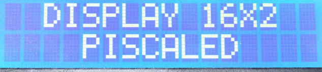
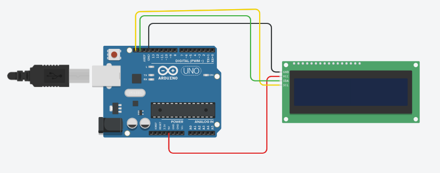
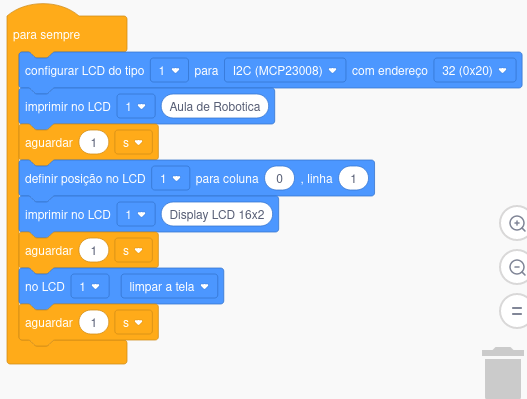
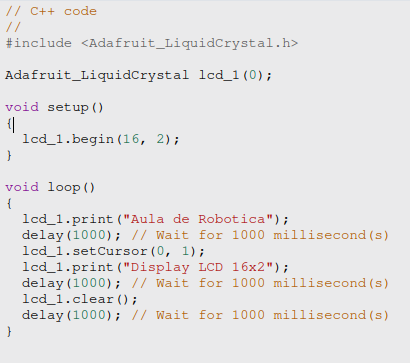

Display LCD 16x2
Prof: Marcelo Vieira dos Santos
Display LCD 16x2 é um display alfanumérico disposto por 2 linhas e 16 colunas e cada celula composta com 5 leds horizontais por 8 leds verticais.

Nesta aula vamos aprender como montar e programar um painel de LEDs 16x2 para este protótipo montamos desta forma

usamos a programação em bloco para montamos na plataforma tinkercard

Programação em C++
